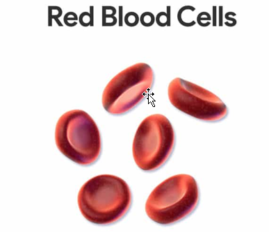
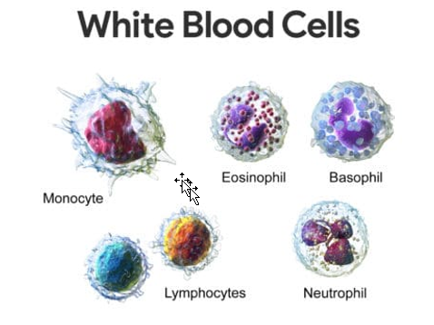
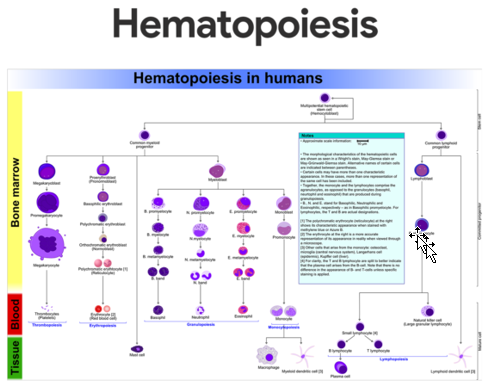
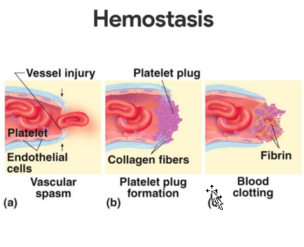
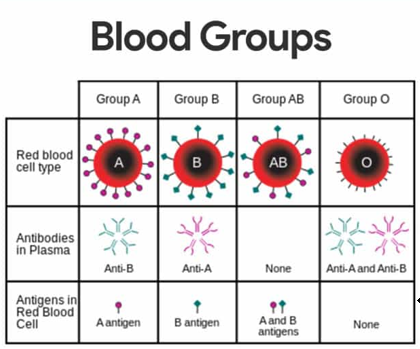

1 Functions of the Blood
Blood is unique; it is the only fluid tissue in the body.
1. Carrier of gases, nutrients, and waste products. Oxygen enters blood in the lungs and is transported to cells. Carbon dioxide, produced by cells, is transported in the blood to the lungs, from which it is expelled. Ingested nutrients, ions, and water are carried by the blood from the digestive tract to cells, and the waste products of the cells are moved to the kidneys for elimination.
2. Clot formation. Clotting proteins help stem blood loss when a blood vessel is injured.
3. Transport of processed molecules. Most substances are produced in one part of the body and transported in the blood to another part.
4. Protection against foreign substances. Antibodies help protect the body from pathogens.
5. Transport of regulatory molecules. Various hormones and enzymes that regulate body processes are carried from one part of the body to another within the blood.
6. Maintenance of body temperature. Warm blood is transported from the inside to the surface of the body, where heat is released from the blood.
7. pH and osmosis regulation. Albumin is also an important blood buffer and contributes to the osmotic pressure of blood, which acts to keep water in the blood stream.
2 Components of Blood
Essentially, blood is a complex connective tissue in which living blood cells, the formed elements, are suspended.
2.1 Physical Characteristics and Volume
Blood is a sticky, opaque fluid with a characteristic metallic taste.
• Color. Depending on the amount of oxygen it is carrying, the color of blood varies from scarlet (oxygen-rich) to a dull red (oxygen-poor).
• Weight. Blood is heavier than water and about five times thicker, or more viscous, largely because of its formed elements.
• pH. Blood is slightly alkaline, with a pH between 7.35 and 7.45.
• Temperature. Its temperature (38 degrees Celsius, or 100.4 degrees Fahrenheit) is always slightly higher than body temperature.
2.2 Plasma
Plasma, which is approximately 90 percent water, is the liquid part of the blood.
• Dissolved substances. Examples of dissolved substances include nutrients, salts (electrolytes), respiratory gases, hormones, plasma proteins, and various wastes and products of cell metabolism.
• Plasma proteins. Plasma proteins are the most abundant solutes in plasma; except for antibodies and protein-based hormones, most plasma proteins are made by the liver.
• Composition. The composition of plasma varies continuously as cells remove or add substances to the blood; assuming a healthy diet, however, the composition of plasma is kept relatively constant by various homeostatic mechanisms of the body.
3 Formed Elements
If you observe a stained smear of human blood under a light microscope, you will see disc-shaped red blood cells, a variety of gaudily stained spherical white blood cells, and some scattered platelets that look like debris.
3.1 Erythrocytes
Erythrocytes, or red blood cells, function primarily to ferry oxygen in blood to all cells of the body.

• Anucleate. RBCs differ from other blood cells because they are anucleate, that is, they lack a nucleus; they also contain a very few organelles.
• Hemoglobin. Hemoglobin, an iron bearing protein, transports the bulk of oxygen that is carried in the blood.
• Microscopic appearance. Erythrocytes are small, flexible cells shaped like biconcave discs- flattened discs with depressed centers on both sides; they look like miniature doughnuts when viewed with a microscope.
• Number of RBCs. There are normally about 5 million cells per cubic millimeter of blood; RBCs outnumber WBCs by about 1000 to 1 and are the major factor contributing to blood viscosity.
• Normal blood. Clinically, normal blood contains 12-18 grams of hemoglobin per 100 milliliters (ml); the hemoglobin content is slightly higher in men (13-18 g/dl) than in women (12-16 g/dl).
3.2 Leukocytes
Although leukocytes, or white blood cells, are far less numerous than red blood cells, they are crucial to body defense against disease.

• Number of WBCs. On average, there are 4,000 to 11,000 WBC/mm3 , and they account for less than 1 percent of total body volume.
• Body defense. Leukocytes form a protective, movable army that helps defend the body against damage by bacteria, viruses, parasites, and tumor cells.
• Diapedesis. White blood cells are able to slip into and out of the blood vessels- a process called diapedesis.
• Positive chemotaxis. In addition, WBCs can locate areas of tissue damage and infection in the body by responding to certain chemicals that diffuse from the damaged cells; this capability is called positive chemotaxis.
• Ameboid motion. Once they have “caught the scent”, the WBCs move through the tissue spaces by ameboid motion (they form flowing cytoplasmic extensions that help move them along).
• Leukocytosis. A total WBC count above 11, 000 cells/mm3 is referred to as leukocytosis.
• Leukopenia. The opposite condition, leukopenia, is an abnormally low WBC count.
• Granulocytes. Granulocytes are granule-containing WBCs; they have lobed nuclei, which typically consist of several rounded nuclear areas connected by thin strands of nuclear material, and includes neutrophils, eosinophils, and basophils.
• Neutrophils. Neutrophil are the most numerous of the WBCs; they have a multilobed granules and very fine granules that respond to acidic and basic stains; neutrophils are avid phagocytes at sites of acute infection, and are particularly partial to bacteria and fungi.
• Eosinophils. Eosinophils have blue red nucleus that resembles an old-fashioned telephone receiver and sport coarse, lysosome-like, brick-red cytoplasmic granules; their number increases rapidly during allergies and infections by parasitic worms or entering via the skin.
• Basophils. Basophils, the rarest of the WBCs, contain large, histamine-containing granules that stain dark blue; histamine is an inflammatory chemical that makes blood vessels leaky and attracts other WBCs to the inflammatory site.
• Agranulocytes. The second group of WBCs, the agranulocytes, lack visible cytoplasmic granules; their nuclei are closer to the norm- that is, they are spherical; they are spherical, oval, or kidney-shaped; and they include lymphocytes and monocytes.
• Lymphocytes. Lymphocytes have a large, dark purple nucleus that occupies most of the cell volume; they tend to take up residence in lymphatic tissues, where they play an important role in the immune response.
• Monocytes. Monocytes are the largest of the WBCs; when they migrate into the tissues, they transform into macrophages with huge appetites; macrophages are very important in fighting chronic infections.
• Platelets. Platelets are not cells in the strict sense; they are fragments of bizarre multinucleate cells called megakaryocytes, which pinch off thousands of anucleate platelet “pieces” that quickly seal themselves off from surrounding fluids; platelets are needed for the clotting process that occurs in plasma when blood vessels are ruptured or broken.
3.3 Hematopoiesis
Blood cell formation, or hematopoiesis, occurs in red bone marrow, or myeloid tissue.

• Hemocystoblast. All the formed elements arise from a common type of stem cell, the hematocystoblast.
• Descendants of hemocystoblasts. The hemocystoblast forms two types of descendants- the lymphoid stem cell, which produces lymphocytes, and the myeloid stem cell, which can produce all other classes of formed elements.
3.4 Formation of Red Blood Cells
Because they are anucleate, RBCs are unable to synthesize proteins, grow, or divide.
• Life span. As they age, RBCs become more rigid and begin to fragment, or fall apart, in 100 to 120 days.
• Lost RBCs. Lost cells are replaced more or less continuously by the division of hemocystoblasts in the red bone marrow.
• Immature RBCs. Developing RBCs divide many times and then begin synthesizing huge amounts of hemoglobin.
• Reticulocyte. Suddenly, when enough hemoglobin has been accumulated, the nucleus and most organelles are ejected and the cell collapses inward; the result is the young RBC, called a reticulocyte because it still contains some rough endoplasmic reticulum (ER).
• Mature erythrocytes. Within 2 days of release, they have rejected the remaining ER and have become fully functioning erythrocytes; the entire developmental process from hemocystoblast to mature RBC takes 3 to 5 days.
• Erythropoietin. The rate of erythrocyte production is controlled by a hormone called erythropoetin; normally a small amount of erythropoeitin circulates in the blood at all times, and red blood cells are formed at a fairly constant rate.
• Control of RBC production. An important point to remember is that it is not the relative number of RBCS in the blood that controls RBC production; control is based on their ability to transport enough oxygen to meet the body’s demands.
3.5 Formation of White Blood Cells and Platelets
Like erythrocyte production, the formation of leukocytes and platelets is stimulated by hormones.
• Colony stimulating factors and interleukins. These colony stimulating factors and interleukins not only prompt red bone marrow to turn out leukocytes, but also marshal up an army of WBCs to ward off attacks by enhancing the ability of mature leukocytes to protect the body.
• Thrombopoeitin. The hormone thrombopoeitin accelerates the production of platelets, but little is known about how that process is regulated.
4 Hemostasis
The multistep process of hemostasis begins when a blood vessel is damaged and connective tissue in the vessel wall is exposed to blood.

• Vascular spasms occur. The immediate response to blood vessel injury is vasoconstriction, which causes that blood vessel to go into spasms; the spasms narrow the blood vessel, decreasing blood loss until clotting can occur.
• Platelet plug forms. Injury to the lining of vessels exposes collage fibers; platelets adhere to the damaged site and platelet plug forms.
• Coagulation events occur. At the same time, the injured tissues are releasing tissue factor (TF), a substance that plays an important role in clotting; PF3, a phospholipid that coats the surfaces of the platelets, interacts with TF, vitamin K, and other blood clotting factors; this prothrombin activator converts prothrombin, present in the plasma, to thrombin, an enzyme; thrombin then joins soluble fibrinogen proteins into long, hairlike molecules of insoluble fibrin, which forms the meshwork that traps RBCs and forms the basis of the clot; within the hour, the clot begins to retract, squeezing serum from the mass and pulling the ruptured edges of the blood vessel closer together.
5 Blood Groups and Transfusions
As we have seen, blood is vital for transporting substances through the body; when blood is lost, the blood vessels constrict and the bone marrow steps up blood cell formation in an attempt to keep the circulation going.
5.1 Human Blood Groups
Although whole blood transfusions can save lives, people have different blood groups, and transfusing incompatible or mismatched blood can be fatal.

• Antigen. An antigen is a substance that the body recognizes as foreign; it stimulates the immune system to release antibodies or use other means to mount a defense against it.
• Antibodies. One person’s RBC proteins will be recognized as foreign if transfused into another person with different RBC antigens; the “recognizers” are antibodies present in the plasma that attach to RBCs bearing surface antigens different from those on the patient’s (blood recipient’s) RBCs.
• Agglutination. Binding of the antibodies causes the foreign RBCs to clump, a phenomenon called agglutination, which leads to the clogging of small blood vessels throughout the body.
• ABO blood groups. The ABO blood groups are based on which of two antigens, type A or type B, a person inherits; absence of both antigens results in type O blood, presence of both antigens leads to type AB, and the presence of either A or B antigen yields type A or B blood.
• Rh blood groups. The Rh blood groups are so named because one of the eight Rh antigens (agglutinogen D) was originally identified in Rhesus monkeys; later the same antigen was discovered in human beings; most Americans are Rh+ (Rh positive), meaning that their RBCs carry the Rh antigen.
• Anti-Rh antibodies. Unlike the antibodies of the ABO system, anti-Rh antibodies are not automatically formed and present in the blood of Rh- (Rh-negative) individuals.
• Hemolysis. Hemolysis (rupture of RBCs) does not occur with the first transfusion because it takes time for the body to react and start making antibodies.
5.2 Blood Typing
The importance of determining the blood group of both the donor and the recipient before blood is transfused is glaringly obvious.
• Blood typing of ABO blood groups. When serum containing anti-A or anti-B antibodies is added to a blood sample diluted with saline, agglutination will occur between the antibody and the corresponding antigen.
• Cross matching. Cross matching involves testing for agglutination of donor RBCs by the recipient’s serum and of the recipient’s RBCs by the donor serum;
• Blood typing for Rh factors. Typing for the Rh factors is done in the same manner as ABO blood typing.